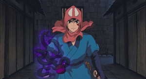
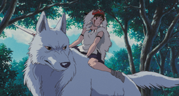
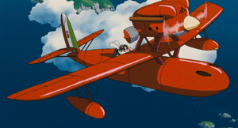
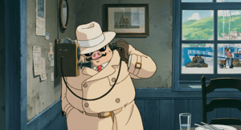
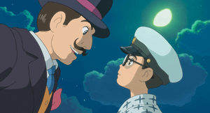
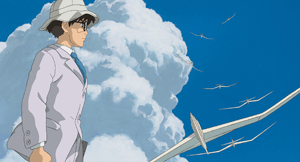

Princess Mononoke
 Impression
If someone ask me "What is recomendation your Ghibli movie?", I recommend Princess Mononoke first.
Princess mononoke is one of the representitive movie in Ghibli movies series. This movie published in 1997
but graphic and design are so beautiful. I think main part is which is right humans technology and culture or
Great Nature.
Main heroine is human but she rised by huge wolf and great nature, so she have to decide to
live with one side.
Porco Rosso
 Impression
This movie is kind of comedy movie but I might recommend for adult ages people, because main charactor
is
older than other Ghibli movies main charactors. His looks is pig but his charactor is very
hard-boild. So we want to know why he became to pig.
The Wind Rises
 Impression
Main charactor thought want to be a pilot when he was chiled but he didn't have enough eye sight to be
a
pilot. He detrmine that to be best plane developer. After he became plane developer, he made capable plane
but it was used for war. So was he right or not?